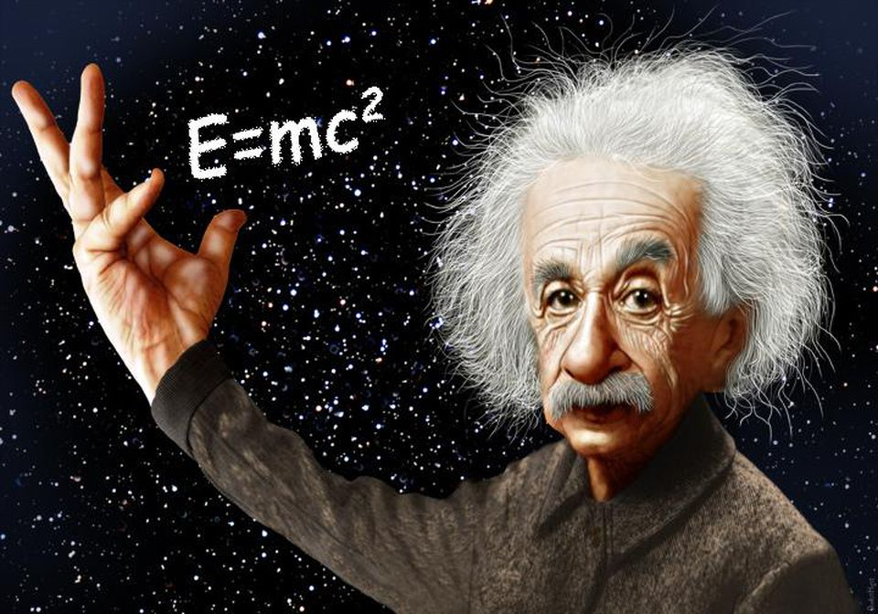
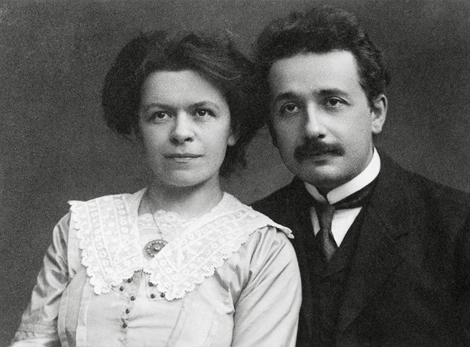

Albert Einstein




One of the Greatest Theoretical Physicists ever.
- : Einstein is born.
- :He moved to Switzerland.
- : He renounced his German citizenship.
- :He received his academic teaching diploma from the Swiss Federal Polytechnic School in Zürich.
- : Employed as a patent examiner at the Swiss Patent Office in Bern.
- : He published four groundbreaking papers, which attracted the attention of the academic world:
- Photoelectric Effect
- Brownian Motion
-
Special Relativity: Introduction - Mass-Energy Equivalence
- (at the age of 26): Awarded a PhD by the University of Zurich
- : He was elected to the Prussian Academy of Sciences in Berlin, where he remained for 19 years
- : He published a paper on general relativity
- : Applied the general theory of relativity to model the structure of the universe
- : Einstein visited the United States and never came back, since he had a Jewish background and Adolf Hitler just came to power
- : Einstein becomes an American Citizen
- (World War II): he endorsed a letter to President Franklin D. Roosevelt alerting FDR to the potential development of "extremely powerful bombs of a new type" and recommending that the US begin similar research
- : Einstein dies
- He published more than 300 scientific papers and more than 150 non-scientific works, while alive
- Today: The word "Einstein" is synonymous with "genius"